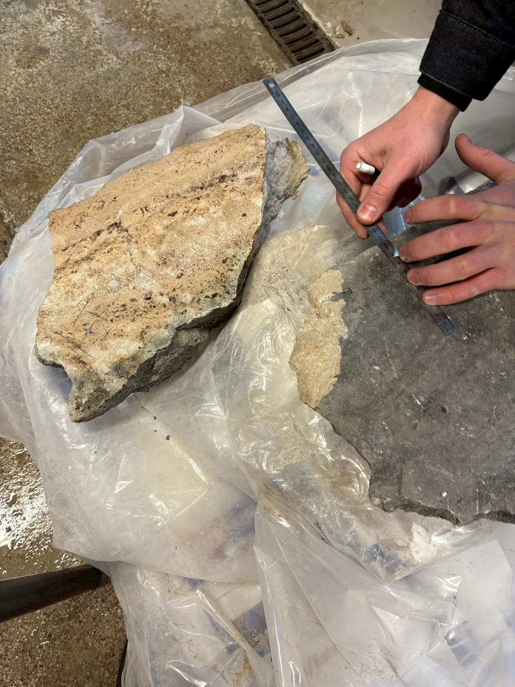
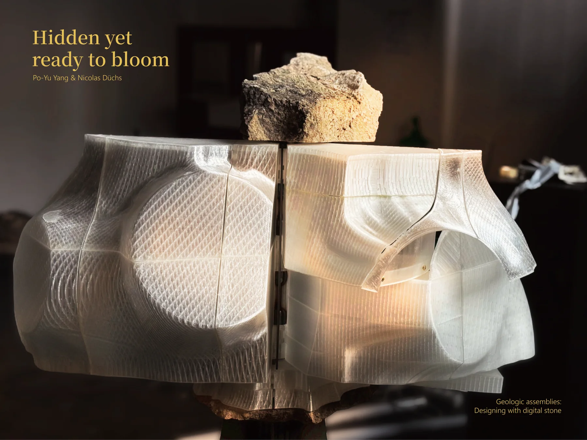
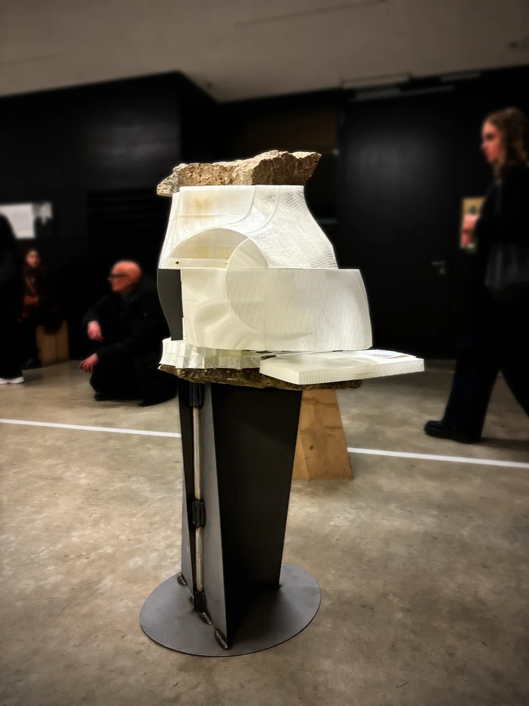
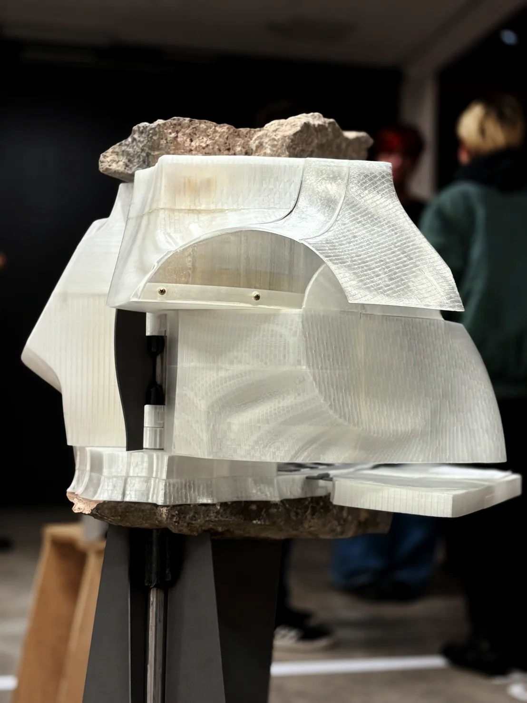
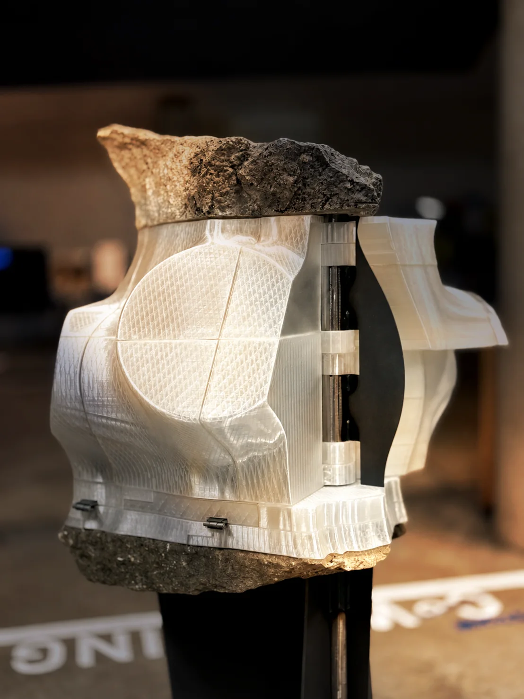
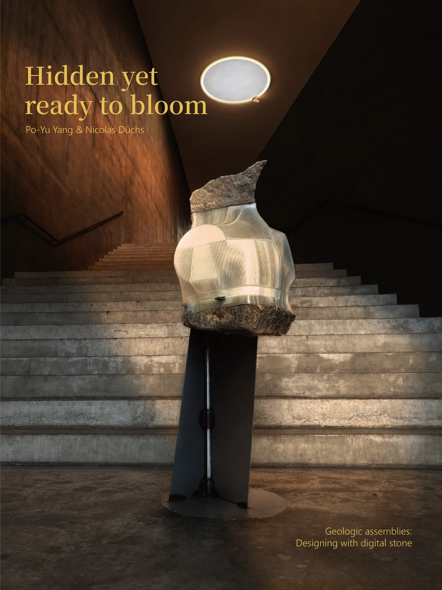
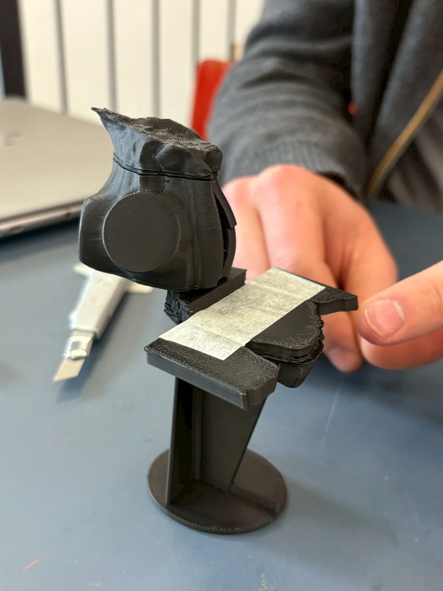
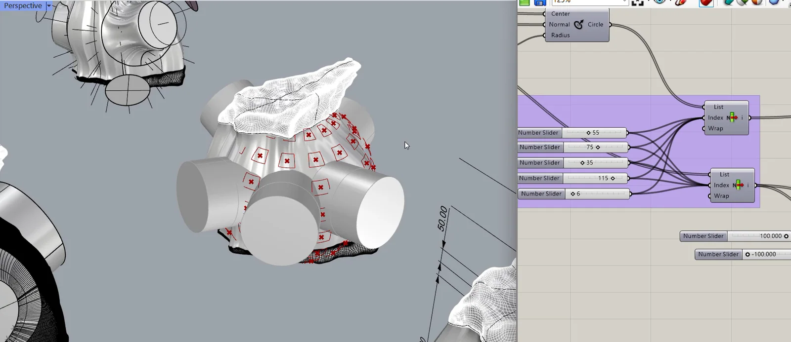
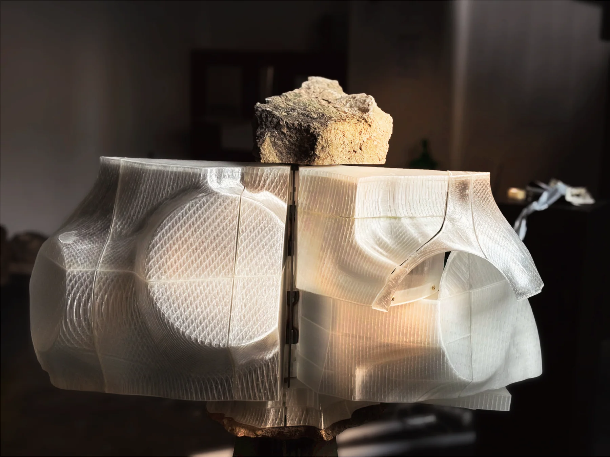

Material
Material encounter
The selected stone is not a finish; its irregularity becomes the starting condition for each assembly.
Collectible design object · Research publication
A mechanically expanding translucent body built around a fragment of natural stone.





02 · Project statement
Geologic Assemblies explores how a stone fragment can become the origin of a new mechanical and spatial body.
03 · The publication
A 59-page documentation of material research, mechanical development, digital fabrication and final assembly.
Cover · Grab a page edge and drag
01 / 59
Drag the page · Arrow keys · Timeline

Material
The selected stone is not a finish; its irregularity becomes the starting condition for each assembly.

Mechanical
A central mechanism allows the translucent body to open, close and reveal its interior structure.

Digital fabrication
Digital modelling translates natural irregularity into a precisely fabricated translucent shell.

05 · The object
06 · Availability
Each object is individually developed around a selected fragment of natural stone.
From NT$200,000
Final scope depends on stone selection, production, shipping and installation.
Private enquiry · Your details are used only to respond.